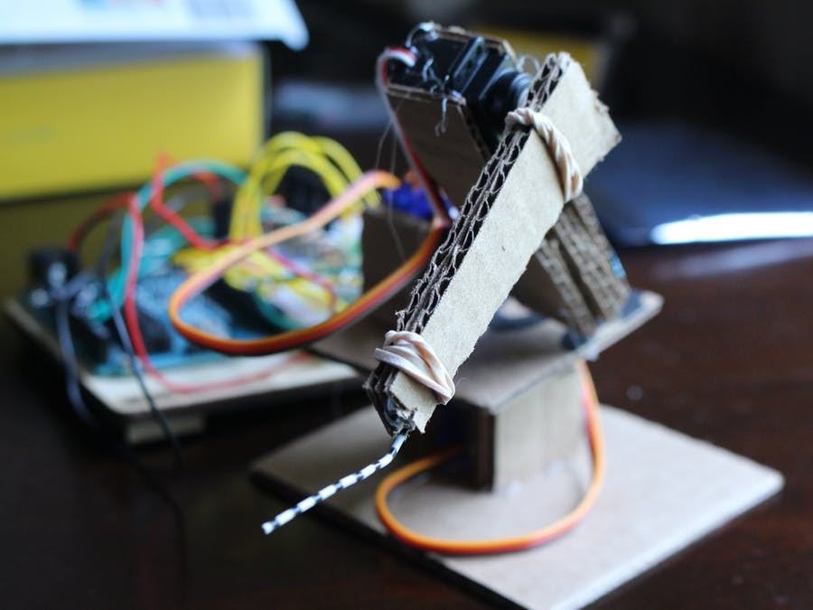
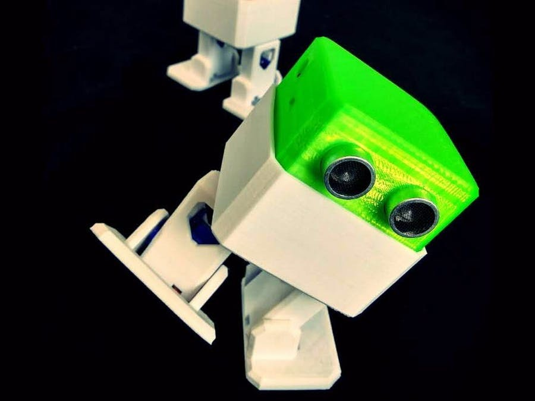

|  |  |
|---|---|
| Workout | Arduino shields |
It can’t help wrap gifts, but this simple robotic arm is still great!
Introduction:
IoT tools are gaining more and more traction, after Pelaton went IPO,
it proves there are a lot of rooms for fitness market. Focusing on exercise not only improves market,
it also improves overall health and fitness of the entire population.
We are team MixPose, a Live Streaming online Yoga Class Application, and we want to build something that's related to IoT Fitness.
While we can track cycling with Pelaton, running/walking with fitbit,
some of the basic exercise such as push ups are still relatively hard to track. In this article,
we are building a prototype of push up counter using kemet pyroelectric sensor and Arduino.
Introducing the code:
We can first try with the code that was given to us by the official site from https://ec.kemet.com/blog/pyro-switch-hidden-ir-detection/
// Get a database reference to our blog
var db = admin.database();
var ref = db.ref("pushup");
ref.once("value", function(snapshot) {
console.log(snapshot.val());
});
const hostname = '192.168.1.12';
const port = 3000;
const server = http.createServer((req, res) => {
const queryObject = url.parse(req.url,true).query;
var dt = new Date();
var utcDate = dt.toUTCString();
if(queryObject != null && queryObject.pushup != null)
{
console.log(queryObject.pushup);
var newPostRef = ref.push().set({
count: queryObject.pushup,
time: utcDate
});
var postId = newPostRef.key;
console.log(postId);
console.log(utcDate);
}
//console.log(querystring.parse(queryObject));
res.statusCode = 200;
res.setHeader('Content-Type', 'text/plain');
But as you can see, this really does not work. This is due to the sensitivity of the raw sensor. At this point you should at least able to know that sensor is connected and working correctly.
Next step: more Arduino shields
As we've seen from previous step that the sensor is jumping all over the place due to it's sensitivity, additional lenses are needed for us to make the sensor actually work. For our test, we put a piece of acrylic covering the sensor itself and running with the same code, we would receive a much more accurate reading. While browsing through the discussion board, GeoNomad has made a 3D printable Lenses on TinkerCad, we can add that to this project. This is able to block all the other angles so we can focus on one single angle. Now that sensor is running and we can track our push ups, we need to store our progress for our pushups, one of the easiest way is firebase. For this article we will go through using firebase through simple ways. Go through create a project like normal CP then create a database with test enviroment. Next start a collection of pushups We can then add our schema, which includes pushup count and timestamp. When all is done, we will have our normal database setup. You would also need a service account key being generated through firebase. Please do not upload this key to the repo, as it is a secure key. Once it's connected, we can create a local relay on our server to make firebase transfer.
admin.initializeApp({
credential: admin.credential.cert(serviceAccount),
databaseURL: "https://databaseName.firebaseio.com"
});
// Get a database reference to our blog
var db = admin.database();
var ref = db.ref("pushup");
ref.once("value", function(snapshot) {
console.log(snapshot.val());
});
const hostname = '192.168.1.12';
const port = 3000;
const server = http.createServer((req, res) => {
const queryObject = url.parse(req.url,true).query;
var dt = new Date();
var utcDate = dt.toUTCString();
if(queryObject != null && queryObject.pushup != null)
{
console.log(queryObject.pushup);
var newPostRef = ref.push().set({
count: queryObject.pushup,
time: utcDate
});
var postId = newPostRef.key;
console.log(postId);
console.log(utcDate);
}
//console.log(querystring.parse(queryObject));
res.statusCode = 200;
res.setHeader('Content-Type', 'text/plain');
Simply run!